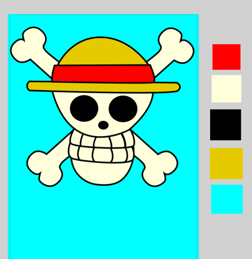
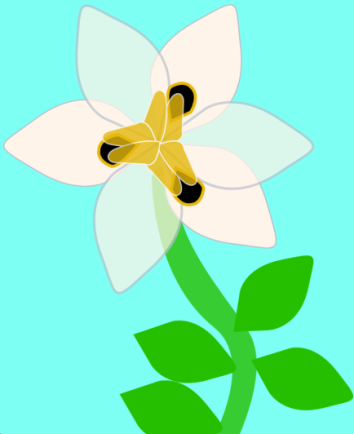
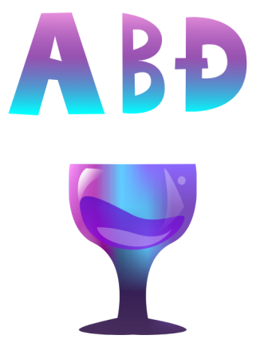
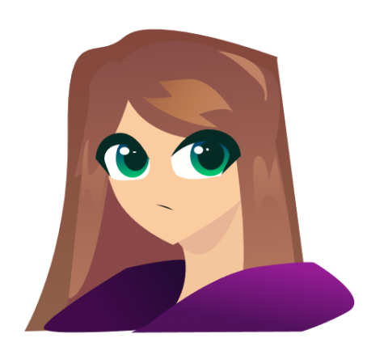
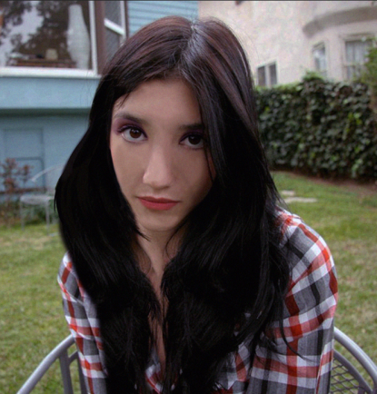
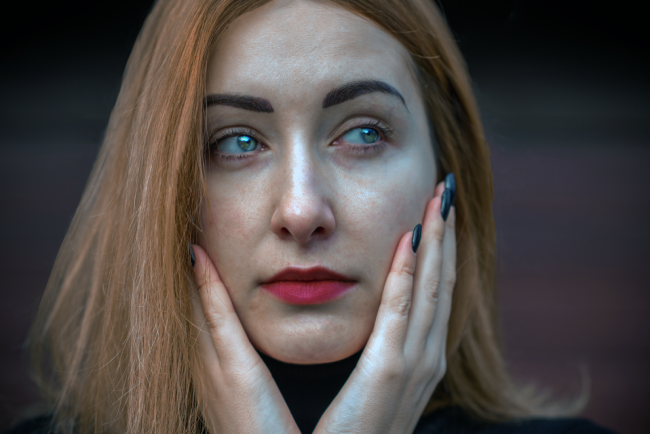
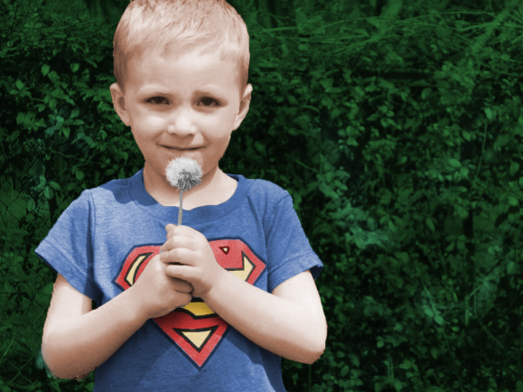
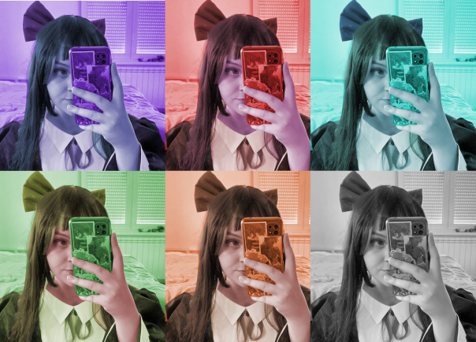
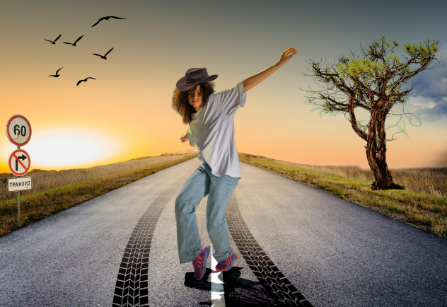

Vjezba 2
Uz pomoć Inkscape morala sam nacrtajti proizvoljan broj krivulja čije su točke poravnate prema mreži koordinatnog sustava, definirala sam im boju i debljinu obruba, te između njih izvršila interpolaciju (Blend).
 PDF verzija
PDF verzija
Primjer fonta:
Nika Kovačićek
Uz pomoć Inkscape morala sam nacrtajti proizvoljan broj krivulja čije su točke poravnate prema mreži koordinatnog sustava, definirala sam im boju i debljinu obruba, te između njih izvršila interpolaciju (Blend).
PDF verzija
Pomoću alata Pen u Inkscape crtala sam objekte kao konture. Koristila sam tehniku dupliciranja objekata pomoću tipke Alt (Duplicate), primjenila sam različite boje kreirane u novoj Color grupi (Swatch). Primijenila sam rotacije, skaliranje, transparenciju i multipliciranje oblika.
 Kreirala sam objekt u kojemu sam koristila tehnike spajanja i izrezivanja objekata i primijenila različite vrste gradijenata i transparencije. Opet sam koristila program Inkscape
 U Photoshopu sam editirala zadane slike. Korisila sam masking tools, blur tools i filtere.
 Zadatak je bilo kolorirati crno-bijelu sliku. Imali smo zadanu jednu sliku i druga je bila slika nas.
 Bile su nam zadane slike koje smo trebali izrezati i maknuti pozadinu,te staviti sve na jednu sliku koristeći različite metode na Photoshopu
Koristeći DaVinci Resolve, zadatak mi je bio napraviti kinemagraf. Jedan zadatak je bio zadan a drugi sam online pronasla i napravila u .gif formatu.
.gif)
.gif)
Trebala sam editirati video u DaVinci Resolve. Bila su mi yadana dva videa i trebala sam ih spojit, usporit te dodati statičan tekst i tekst u pokretu.
Koristeći .html i .css trebala sam napraviti web stranicu koja povezuje pdf, video, slike, druge html i ostalo.
Vježba 10U Inkscapeu sam trebala precrtati sliku koja mi je bila zadana. Trebala smo dodati tekst ,te se držati pravila koja su nam bila zadana.
 PDF verzija
PDF verzija
U Photoshopu sam trebala izrezati zadane slike i svoje slike te ih editirati i kolorirati.